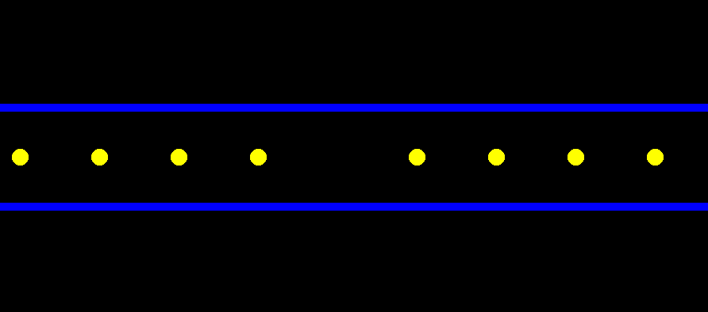

Section 07: Breaking Out Pacman
Jed Rembold and Eric Roberts
Week of October 16th
Pacman
- This week all problems will revolve around a single situation:
simulating a very small portion of the classic arcade game Pacman
- Tasks will thus include:
- Creating and adding a Pacman shape to the window
- Getting Pacman to move
- Implementing bouncing off the walls
- Getting Pacman to “eat” the pills as he moves
- (Optional) Getting Pacman’s mouth to gobble as he moves
Part A: Creating Pacman
- The template file automatically creates the scene to below when
run
- Your initial task is to add the classic yellow Pacman shape to the
center of the screen
- Consists of a circle missing a 90 deg segment centered on the
positive x-axis
- Recall when working with
GArcs how you
need to specify the location! That will be important for getting Pacman
properly centered


Part A: Pacman Created
def create_pacman():
pacman = GArc(
GW_WIDTH / 2 - PACMAN_RADIUS,
GW_HEIGHT / 2 - PACMAN_RADIUS,
2 * PACMAN_RADIUS,
2 * PACMAN_RADIUS,
45,
270,
)
pacman.set_filled(True)
pacman.set_fill_color("yellow")
return pacman
pacman = create_pacman()
gw.add(pacman)
Part B: Moving Pacman
- The next task is to get Pacman moving!
- Create a
step callback function and
define an interval event listener to call that function every 20 ms
- Each time the
step function is called,
it should move Pacman forward (to the right) by the number of pixels
indicated by the provided constant
Part B: Pacman Moved
def step():
pacman.move(PACMAN_SPEED, 0)
gw.set_interval(step, 20)
Part C: Bouncing Pacman
- Currently, Pacman will just move off the right side of the screen,
which is not ideal. Instead we want Pacman to reverse direction at the
wall
- Will thus need to keep track of Pacman’s current direction somehow
- This will need to be updated or set within the
step callback function, so it
must be added as an attribute to the
GWindow
(gw)
- Update the movement in your
step
function to use this new variable
- Add a conditional check to see if the right edge of Pacman has
extended beyond the right edge of the screen, and reverse the direction
if so
- You can also use the
set_starting_angle
and get_starting_angle methods for
GArcs to flip Pacman around to face the
other direction!
Part C: Pseudo Bouncing
- In pseudocode, you might have something like:
def step():
pacman.move(|||something involving the direction|||, 0)
if |||left or right edge of Pacman extends off screen|||:
|||reverse Pacman direction by switching direction variable value|||
|||turn Pacman around by changing starting angle of arc|||
|||initialize direction variable|||
gw.set_interval(step, 20)
Part C: Pacman Bounced
def step():
pacman.move(gw.vel, 0)
if (pacman.get_x() + 2 * PACMAN_RADIUS > GW_WIDTH #right edge
or pacman.get_x() < 0 #left edge
):
gw.vel *= -1 #flip it
pacman.set_start_angle(pacman.get_start_angle() + 180)
pacman = create_pacman()
gw.vel = PACMAN_SPEED
gw.set_interval(step, 20)